学习iOS开发的同学应该都知道UITableView，几乎每个APP中都有它的存在，而且衍生出各种形态；那么同样，ListView就是在React Native中的tableView，而且更加简单和灵活易用；让我们一起搞定它。
前言
ListView组件是React Native中一个比较核心的组件，用途非常的广； 该组件设计用来高效的展示垂直滚动的数据列表：
首先创建一个ListView.DataSource数据源，然后给它传递一个普通的数据数组；
使用数据源(data source)实例化一个ListView组件,定义一个renderRow回调函数，这个函数会接受数组中的每个数据作为参数，并返回一个可渲染的组件(该就是列表的每一行的item)。
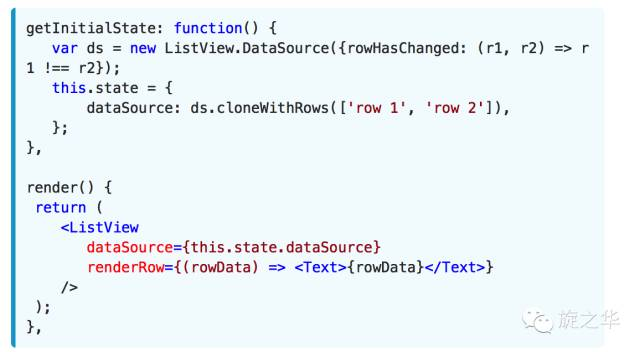
##ListView常用的属性
ScrollView
相关属性样式全部继承
dataSource
ListViewDataSource 设置ListView的数据源
initialListSize number
设置ListView组件刚刚加载的时候渲染的列表行数，用这个属性确定首屏或者首页加载的数量，而不是花大量的时间渲染加载很多页面数据，提高性能。
onChangeVisibleRows function
(visibleRows,changedRows)=>void。
当可见的行发生变化的时候回调该方法。
onEndReachedThreshold number
当偏移量达到设置的临界值调用onEndReached
onEndReached function
当所有的数据项行被渲染之后，并且列表往下进行滚动。一直滚动到距离底部onEndReachedThredshold设置的值进行回调该方法。原生的滚动事件进行传递(通过参数的形式)。
pageSize number
每一次事件的循环渲染的行数
removeClippedSubviews bool
该属性用于提供大数据列表的滚动性能。该使用的时候需要给每一行(row)的布局添加over:’hidden’样式。该属性默认是开启状态。
renderFooter function 方法 ()=>renderable
在每次渲染过程中头和尾总会重新进行渲染。如果发现该重新绘制的性能开销比较大的时候，可以使用StaticContainer容器或者其他合适的组件。
renderHeader function 方法
在每一次渲染过程中Footer(尾)该会一直在列表的底部，header(头)该会一直在列表的头部，用法同上。
renderRow function
(rowData,sectionID,rowID,highlightRow)=>renderable
该方法有四个参数，其中分别为数据源中一条数据，分组的ID，行的ID，以及标记是否是高亮选中的状态信息。
renderScrollComponent function
方法 (props)=>renderable 该方法可以返回一个可以滚动的组件。默认该会返回一个ScrollView
renderSectionHeader function (sectionData,sectionID)=>renderable
如果设置了该方法，这样会为每一个section渲染一个粘性的header视图。该视图粘性的效果是当刚刚被渲染开始的时候，该会处于对应的内容的顶部，然后开始滑动的时候，该会跑到屏幕的顶端。直到滑动到下一个section的header(头)视图，然后被替代为止。
renderSeparator function
(sectionID,rowID,adjacentRowHighlighted)=>renderable
如果设置该方法，会在被每一行的下面渲染一个组件作为分隔。除了每一个section分组的头部视图前面的最后一行。
scrollRenderAheadDistance number
进行设置当该行进入屏幕多少像素以内之后就开始渲染该行
ListView的高阶特性
ListView同样支持一些高级特性，包括设置每一组的粘性的头部(类似于iPhone)、支持设置列表的header以及footer视图、当数据列表滑动到最底部的时候支持onEndReached方法回调、设备屏幕列表可见的视图数据发生变化的时候回调onChangeVisibleRows以及一些性能方面的优化特性。
ListView设计的时候，当需要动态加载非常大的数据的时候，下面有一些方法性能优化的方法可以让我们的ListView滚动的时候更加平滑：
1）只更新渲染数据变化的那一行 ，rowHasChanged方法会告诉ListView组件是否需要重新渲染当前那一行。
2）选择渲染的频率，默认情况下面每一个event-loop(事件循环)只会渲染一行(可以同pageSize自定义属性设置)。这样可以把大的工作量进行分隔，提供整体渲染的性能。
综合大演练
最简单的ListView
核心代码：
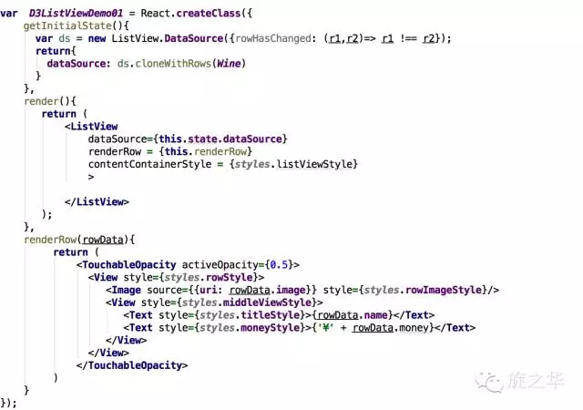
运行效果截图：
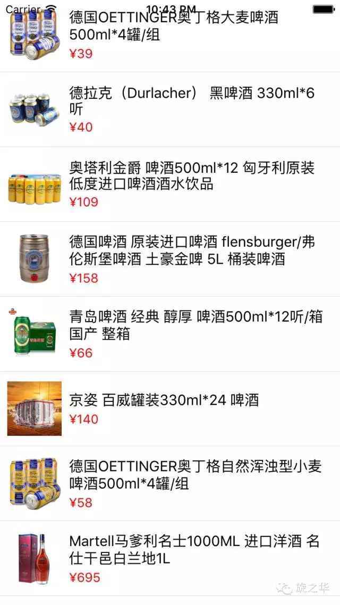
带有组头的汽车品牌展示
- 核心代码：
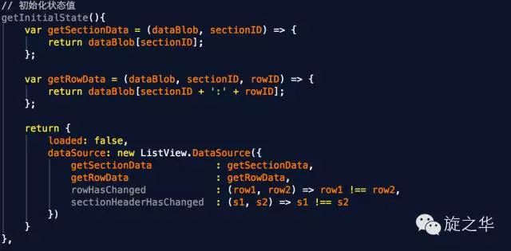
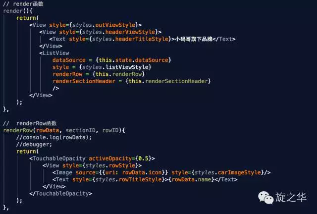
- 运行结果：
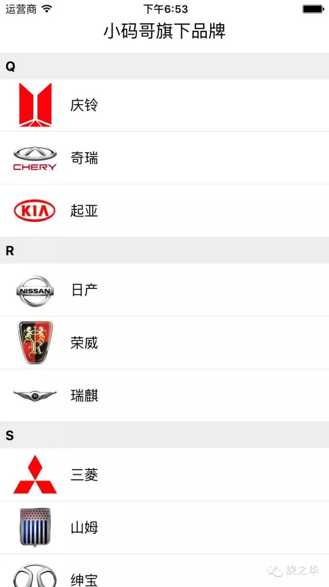
- 项目技术点分析：
在React Native中，ScrollView组件可以使用 stickyHeaderIndices 轻松实现 sticky 效果；而使用ListView组件时，使用 stickyHeaderIndices 则不生效。
如何实现滚动时每个section header会吸顶？
在ListView中要实现 sticky ，需要使用 cloneWithRowsAndSections 方法，将 dataBlob(object), sectionIDs (array), rowIDs (array) 三个值传进去。
dataBlob
dataBlob 包含ListView所需的所有数据（section header 和 rows），在ListView渲染数据时，使用getSectionData 和 getRowData 来渲染每一行数据。 dataBlob 的 key 值包含 sectionID + rowId
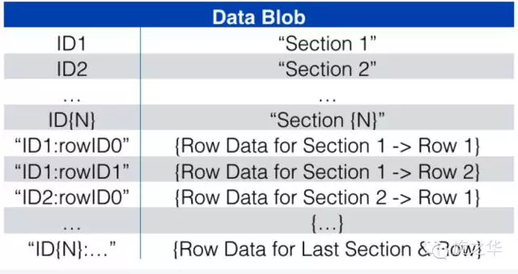
sectionIDs
sectionIDs 用于标识每组section。
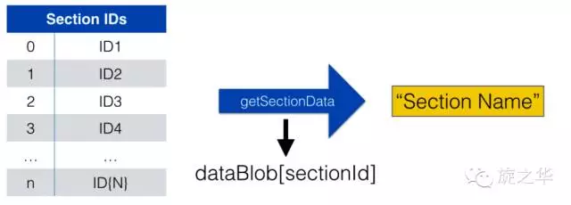
rowIDs
rowIDs 用于描述每个 section 里的每行数据的位置及是否需要渲染。在ListView渲染时，会先遍历 rowIDs 获取到对应的 dataBlob 数据。
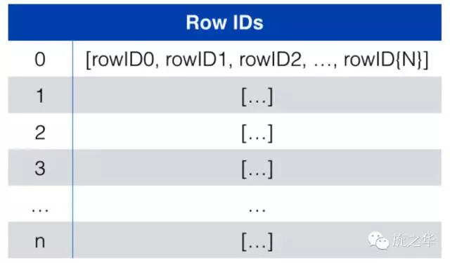
模拟对应的数据结构
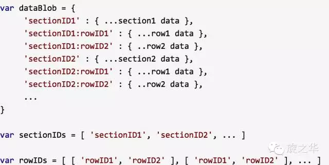
在 DataSource 中，设置ListView获取row和section的方法
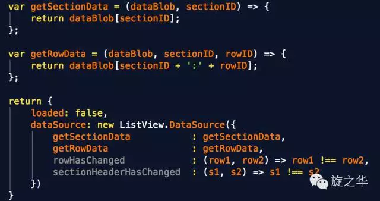
最后
- 1.刷新状态，将数据传入到listView中：
1 | this.setState({ |
- 2.设置listView的相关属性：
1 | <ListView |
用ListView实现九宫格布局
相关技术点：
通常情况下，我们对ListView的操作是纵向的，如果是横向的，则需要设置ListView的contentContainerStyle属性，添加flexDirection:‘row’让多个ListView在同一行显示，而且通过flexWrap:’wrap’进行换行。
核心代码：
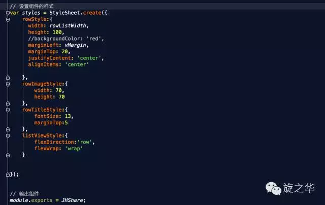
运行效果：
(本文转载自旋之华微信公众号)